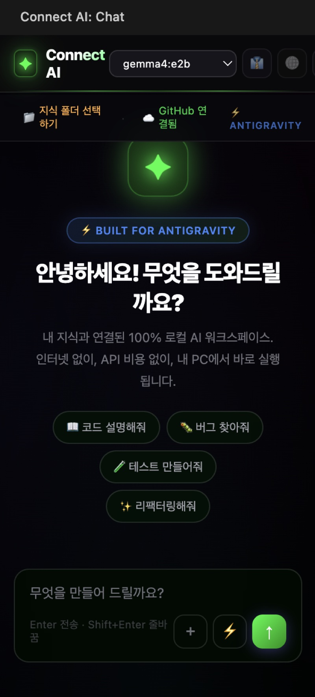

Obsidian + Ollama + AntiGravity로 클라우드 없이 구축한
완전 로컬 AI 워크플로우 실험
GPT-4o API 호출 비용이 개인 사용량에서도 무시할 수 없는 수준. 학습 목적 실험 비용을 제로에 가깝게 줄이고 싶었다
개인 노트·아이디어·미완성 글을 외부 서버로 전송하지 않고 AI 어시스턴트로 활용하고 싶다
인터넷 없이도 작동하는 AI 툴을 직접 구축·운용해봄으로써 로컬 추론의 실질적 한계를 체감하고 싶었다
